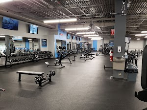
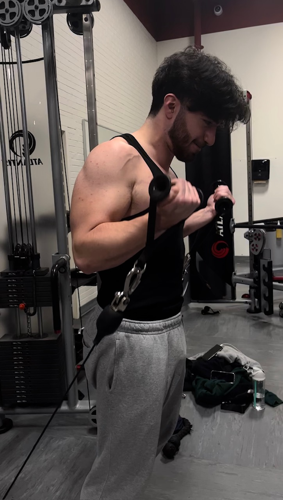

Bienvenue sur mon site de musculation
Découvrez des conseils pratiques, des plans d'entraînement et des informations sur le monde de la musculation. Que vous soyez débutant ou expert, ce site est conçu pour vous motiver et vous guider dans votre parcours fitness.
À propos de la musculation
J'ai commencé le gym parce que je me sentais trop maigre et manquais de confiance en moi. Je voulais un changement, devenir plus fort physiquement et mentalement. Le gym est devenu un moyen de transformer mon corps, de dépasser mes limites, et de retrouver une meilleure estime de moi-même.


Cable Bicep Curl
Ma progression